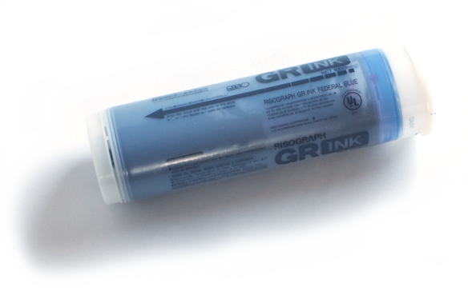

{% assign sections = site.sections | sort: 'value' %}

 <!-- home section -->
 <div class="section">
   <span class="home-text dark-blue">everything tells a story</span>
   {% for section in sections %}
     <a href="#" class="item" data-src={{ section.value }}></a>
   {% endfor %}
 </div>

<!-- all sections -->
{% for section in sections %}
<div class="section">
  <!-- slide -->
  {% for slide in section.slides %}
      <div class="slide {{ slide.background }}">
        <!-- header -->
        <div class="container section-header">
          <a href="/"></a>

          <a id="hamburger-icon" href="#" title="Menu">
              <span class="line line-1"></span>
              <span class="line line-2"></span>
              <span class="line line-3"></span>
          </a>

        </div>
        <!-- body -->
        <div class="section-body-container">
        {% if slide.image-orientation == 'left' %}
        <!-- {{ slide.image }} -->
          

          <div class="section-text-container">
            <span class="section-text-header {{ slide.header-color }}">{{ slide.title }}</span>
            <div class="section-body-text">{{  slide.content  }}</div>
          </div>
        {% else %}
          <div class="section-text-container">
            <span class="section-text-header {{ slide.header-color }}">{{ slide.title }}</span>
            <div class="section-body-text">{{  slide.content  }}</div>
          </div>
          <!-- {{ slide.image }} -->
          
        {% endif %}
        </div>
  </div>
  {% endfor %}

</div>
{% endfor %}

<!-- footer -->
<div class="section white-stripe-background">
  <div class="footer">
      <div class="container footer-header">
          <a href="/"></a>
          <i class="material-icons red">menu</i>
      </div>
      <div class="footer-body center">
        <p class="red bold">My name is Kendell Harbin.</p>
        <p class="red bold">I live and work in Kansas City, Missouri.</p>
          <p>When asked ‘what do you do?’</p>
          <p>I respond with any of the following:</p>
          <p>I collaborate with Madeline Gallucci as co-director of Front/Space.</p>
          <p>I work as a project manager and designer at Oddities Prints.</p>
          <p>I moonlight as a cook at an all organic/plant based restaurant.</p>
          <p>I operate a vhs lending library out of my bedroom.</p>
          <p>I am a teaching artist.</p>
          <p>I am a student.</p>
          <p>I like to walk.</p>
      </div>
  </div>
</div>